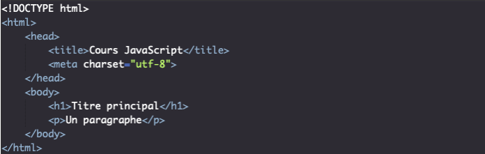
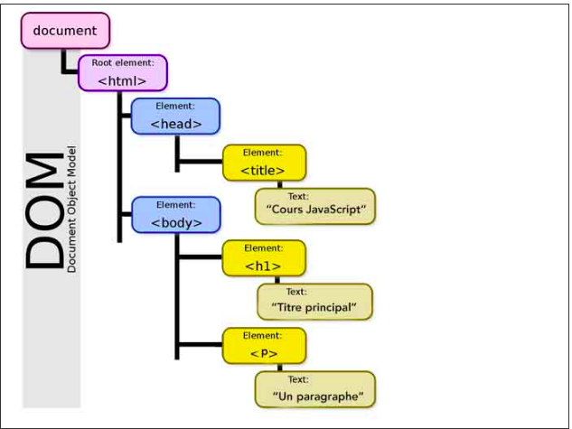

Dans cette nouvelle partie, nous allons étudier le DOM ou Document Object Model, une interface qui fait partie du BOM (Browser Object Model) et grâce à laquelle nous allons pouvoir manipuler le contenu HTML et les styles de nos pages.
Dans la partie précédente, nous avons étudié le BOM ou Browser Object Model ainsi que certaines des interfaces le composant.
Le terme DOM est, au contraire du BOM, un terme standardisé et donc défini de manière officielle. Le DOM est une interface de programmation pour des documents HTML ou XML qui représente le document (la page web actuelle) sous une forme qui permet aux langages de script comme le JavaScript d’y accéder et d’en manipuler le contenu et les styles.
Le DOM est ainsi une représentation structurée du document sous forme « d’arbre » crée automatiquement par le navigateur. Chaque branche de cet arbre se termine par ce qu’on appelle un nœud qui va contenir des objets. On va finalement pouvoir utiliser ces objets, leurs propriétés et leurs méthodes en JavaScript.
Le DOM contient ou correspond à un ensemble d’APIs qui font partie du BOM comme l’interface Document par exemple qui représente une page et sert de point d’entrée dans l’arborescence du DOM. Pour utiliser les propriétés et méthodes de l’interface Document, nous allons tout simplement utiliser la propriété document de Window. Nous avons déjà utilisée cette propriété de nombreuses fois dans ce cours, notamment lorsqu’on souhaitait injecter du texte dans un paragraphe avec le code document.getElementById('#').innerHTML.
Lorsqu’on demande à un navigateur d’afficher une page Web, celui-ci va automatiquement créer un modèle objet de la page ou du document. Ce modèle objet correspond à une autre représentation de la page sous forme d’arborescence contenant des objets qui sont de type Node (nœuds). Les navigateurs utilisent eux-mêmes cette arborescence qui va s’avérer très pratique à manipuler pour eux et notamment pour appliquer les styles aux bons éléments. Nous allons également pouvoir utiliser ce modèle objet en utilisant un langage de script comme le JavaScript.
Regardez plutôt le code HTML suivant :
Lorsqu’on demande au navigateur d’afficher cette page, il crée automatiquement un DOM qui ressemble à ceci :
Cette structure ne doit pas vous faire peur. Le modèle objet d’un document HTML commence toujours avec l’élément html (et son doctype qui est un cas particulier). On parle également de « nœud » racine.
Le terme « nœud » est un terme générique qui sert à désigner tous les objets contenus dans le DOM. A l’extrémité de chaque branche du DOM se trouve un nœud.
A partir du nœud racine qui est le nœud HTML on voit que 3 branches se forment : une première qui va aboutir au nœud HEAD, une deuxième qui aboutit à un nœud #text et une troisième qui aboutit à un nœud BODY.
De nouvelles branches se créent ensuite à partir des nœuds HEAD et BODY et etc.
Comme vous pouvez le voir, cette architecture est très similaire au code de notre page (ce qui est normal puisqu’elle en est tirée), à la différence qu’on a également des nœuds « texte » mentionnés.
Ces nœuds texte apparaissent pour deux raisons : soit parce qu’un élément contient effectivement du texte, soit parce qu’on est retourné à la ligne ou qu’on a laissé un espace entre deux éléments contenus dans l’élément html (aucun nœud de type texte n’est créé entre les balises ouvrantes de html et de head ni entre les balises fermantes de body et de html).
Un caractère spécial va nous indiquer si un nœud de type texte a été constitué par une nouvelle ligne (caractère ↵), un espace (caractère ␣) ou du texte (caractère #).
Une autre représentation du DOM peut être obtenue en inspectant la page. Dans cette représentation, certains navigateurs comme Chrome ne mentionnent pas les nœuds texte crées par des espaces ou des retours à la ligne dans le code car ils savent que ce ne sont que des nœuds « esthétiques » et non utiles au code.
Vous pouvez ici retenir que chaque entité dans une page HTML va être représentée dans le DOM par un nœud.
On va pouvoir distinguer les nœuds les uns des autres en fonction de s’il s’agit d’un nœud constitué par un texte, par un élément, par un commentaire, etc. On va pouvoir utiliser des propriétés et méthodes différentes avec chaque type de nœud puisqu’ils vont dépendre d’interfaces différentes.
Pour être tout à fait précis, voici les différents types de nœuds que vous pourrez rencontrer et qui sont représentés par des constantes auxquelles une valeur est liée :
| Constante | Valeur | Description |
| ELEMENT_NODE | 1 | Représente un nœud élément (comme p ou div par exemple)> |
| TEXT_NODE | 3 | Représente un nœud de type texte> |
| PROCESSING_INSTRUCTION_NODE | 7 | Nœud valable dans le cas d’un document XML. Nous ne nous en préoccuperons pas ici. |
| COMMENT_NODE | 8 | Représente un nœud commentaire |
| DOCUMENT_TYPE_NODE | 10 | Représente le nœud doctype |
| DOCUMENT_FRAGMENT_NODE | 11 | Représente un objet document minimal qui n’a pas de parent (ce type de nœud ne nous intéressera pas ici |
Par ailleurs, vous pouvez noter qu’il existait auparavant d’autres constantes de type nœuds qui sont aujourd’hui dépréciées dont notamment ATTRIBUTE_NODE (représentant l’attribut d’un élément) et d’autres constantes liées au XML qui ne nous intéressent pas ici. Ces constantes ne doivent plus être utilisées mais il est possible que vous les rencontriez toujours sur certains sites.
L’un des intérêts majeurs du DOM et des nœuds va être qu’on va pouvoir se déplacer de nœuds en nœuds pour manipuler des éléments en utilisant le JavaScript.
Ce qu’on appelle « DOM » est en fait un ensemble d’interfaces qui vont pouvoir fonctionner ensemble et nous permettre notamment d’accéder à et de manipuler divers éléments de nos documents en JavaScript.
Pour vous donner un ordre d’idée de la complexité du DOM HTML, celui-ci est composé de plus de 40 interfaces « de base » et la plupart de ces interfaces sont-elles mêmes composées d’autres interfaces.
Il est bien évidemment hors de question d’étudier chacune de ces interfaces en détail mais il reste bon de comprendre qu’il existe une vraie complexité derrière les outils que nous allons utiliser et que ces interfaces sont justement de merveilleux outils en soi pour cacher la complexité des opérations réalisées en arrière-plan.
L’interface Window qu’on a déjà étudié et qui est liée au DOM ;
L’interface Event qui représente tout événement qui a lieu dans le DOM (nous allons définir précisément ce qu’est un évènement dans la suite de cette partie) ;
L’interface EventTarget qui est une interface que vont implémenter les objets qui peuvent recevoir des évènements ;
L’interface Node qui est l’interface de base pour une grande partie des objets du DOM ;
L’interface Document qui représente le document actuel et qui va être l’interface la plus utilisée ;
L’interface Element qui est l’interface de base pour tous les objets d’un document ;
En plus de ces interfaces incontournables, on pourra également citer les interfaces (mixin) ParentNode, ChildNode, NonDocumentTypeChildNode, HTMLElement et NonElementParentNode qui vont également nous fournir des propriétés et méthodes intéressantes.
Note : Le JavaScript est un langage à héritage simple. Cela signifie qu’une interface ne peut hériter que d’une seule autre interface. Les mixin sont des sortes d’interfaces qui permettent de contourner cette limitation : une interface ne pourra hériter que d’une autre interface mais pourra également implémenter plusieurs mixin.
Pour bien vous situer dans la hiérarchie du DOM et entre ces interfaces, vous pouvez retenir que :
L’interface EventTarget est l’interface parent de Node et donc Node hérite (des propriétés et méthodes) de l’interface EventTarget ;
L’interface Node est le parent des interfaces Document et Element qui héritent donc de Node (et donc par extension également de EventTarget). De plus, Document et Element implémentent les mixin ParentNode et ChildNode ;
L’interface Element implémente également le mixin NonDocumentTypeChildNode ;
L’interface Document implémente également le mixin NonElementParentNode ;
L’interface HTMLElement hérite de l’interface Elem
Comme les deux interfaces Document et Element héritent de ou implémentent une grande partie des autres interfaces, ce seront souvent nos interfaces de référence à travers lesquelles nous allons utiliser la plupart des propriétés et des méthodes des interfaces citées ci-dessus.
Dans la suite de cette partie, plutôt que de vous présenter les interfaces unes à une avec leurs propriétés et leurs méthodes, nous allons utiliser une approche plus pratique et grouper les propriétés et méthodes selon le type de données qu’elles contiennent et les opérations qu’elles permettent d’accomplir.
Cela rendra la partie beaucoup plus dynamique et agréable à suivre que les parties précédentes qui étaient plus théoriques et abstraites (mais qui nous ont servi à définir des bases solides et pour lesquelles il était très compliqué d’utiliser cette même approche pratique : il y a un temps pour tout !).
En résumé, nous avons vu qu'au moyen de JavaScript, nous pouvons inspecter et interférer avec le document que le navigateur affiche via une structure de données appelée DOM. Cette structure de données représente le modèle de navigateur du document, et grâce à JavaScript nous pouvons la modifier pour changer notre page. Ce DOM est organisé sous forme d'arbre, dans lequel les éléments sont organisés hiérarchiquement selon la structure du document. Les objets qui représentent des éléments ont des propriétés qui peuvent être utilisées pour naviguer dans cette arborescence. Nous pouvons modifier complètement notre page et son contenu, ou certains éléments que nous spécifions, ainsi que nous pouvons varier la façon dont ce contenu est affiché en manipulant le style d'un élément directement via la propriété style.